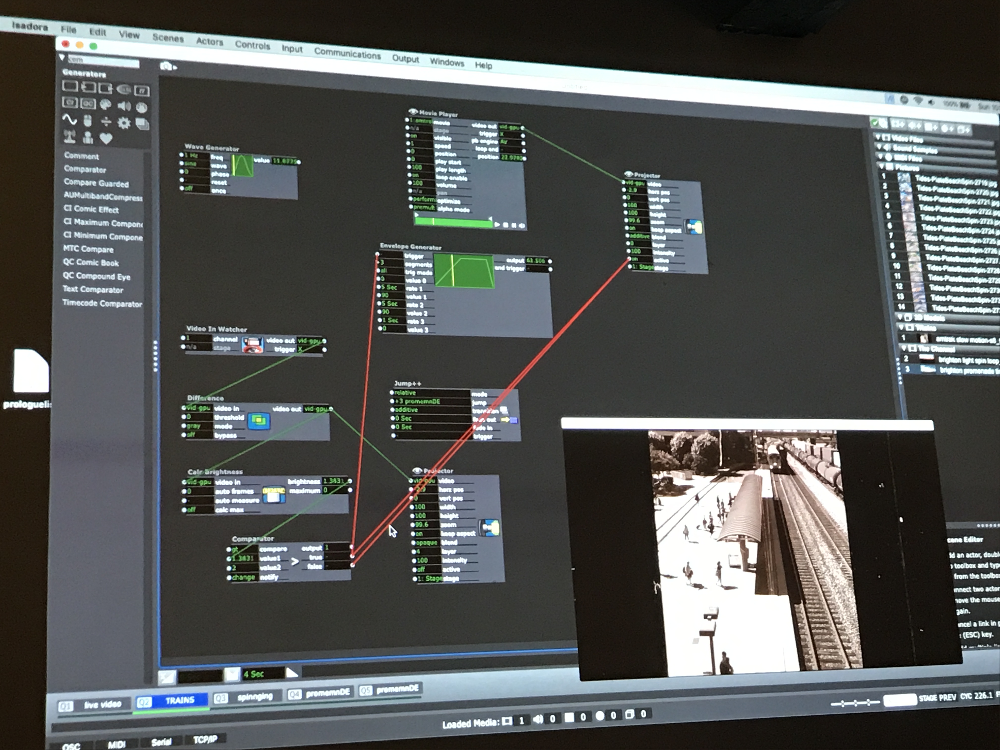
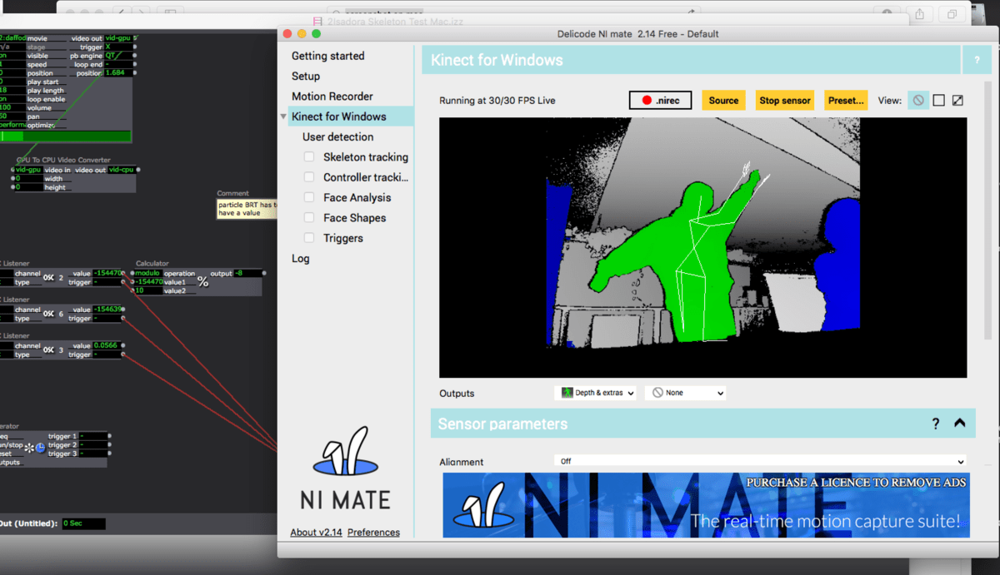
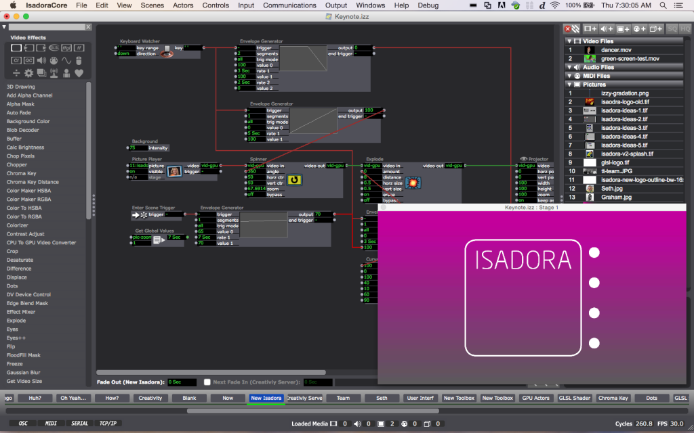

An above example of a project I worked on at CounterPulse.
Hello! Welcome to my webpage. My name is Rai and I’m a tech and web developer enthusiast. I currently reside in San Francisco, one of the largest technology hubs in the World. I enjoy integrating my education and performing arts background with interactive media. Here on this page, you’ll find a quick overview of one of my favorite hobbies - motion capture technology.
If you’re interested in doing motion capturing on your computer, first you’ll need a couple of tools to get you started. Besides a computer and projector, you’ll need a device to capture your full body. Whereas the cameras on our computers are great at capturing our faces, the Kinect Sensor v2 has something called depth resolution to track your body as it goes near or far from the device. Then, I highly suggest you download a free application called, NI mate, it gives your computer all kinds of data to help sync your movement in real time. Put it all together with Traikatronix’s GUI called Isadora in order to set the rules for how your motion will trigger your audiovisuals.
Below is an image of a video I was working on in Isadora:

Fingertip technology like the computer keyboard and touchpad are very fun to use. However, I feel that motion capture cameras and even wearable technology can be just as functional. In the theater world, interactive technology is being utilized to initiate scenes and special effects. Overall, I hope my experience with my hobby helps you to find your passion for technological advancement.


Here’s a list of some other tools & devices you can use:
| Video 1 | Intro to Isadora |
|---|---|
| Video 2 | Isadora | NI mate | Kinect |
| Video 3 | Project using Motion Capture |
Image Credits: (In order by Appearance)